Point-of-sale for telecom retail
Reimagining the telecom retail experience, starting from a point-of-sale.

Reimagining the telecom retail experience, starting from a point-of-sale.
We have a 20-year-old feature-bloated product, severely slowing our feature velocity; blocking the company’s ability to innovate.
Our clients also wanted pieces of our solutions to solve their own business needs. However, this cannot be achieved, as we can only give them all or nothing.
The goal is to modularize pieces of our giant product and turn it into solutions that integrates seamlessly with each other. I was responsible for the point-of-sale
Our short term goal is to release the modularized point-of-sale by early 2023, so our strategic partner can pilot in-stores.
Our long term goal is to reduce the transaction time by 30%
The company is transitioning from a sales-led to a product-led process. There is no process established on how we work together.
Design is considered an afterthought. Our cross-functional stakeholders often do not know how to collaborate with us from the discovery phase.
A lot of ambiguity. The only direction given is “modularize the POS” and “needs to work on all devices” by Q1 of 2023
I went on on-site visits, conducted customer interviews with former sales reps, and consulted the CX team to understand what:
1. The current in-store experience is like today
2. Painpoints associated with the process today
I mapped out a user journey from the outcomes of my research.
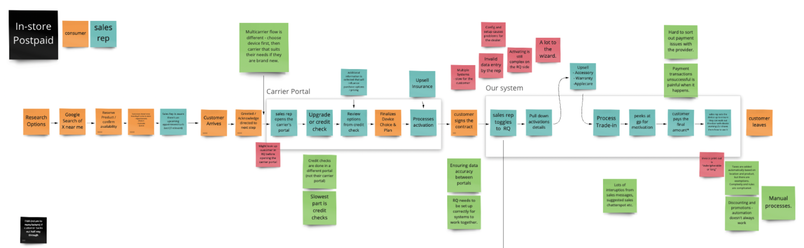The average time of transaction is around 45 minutes. Some of the reasons why it takes so long:
1. There is a minimum of 2 platforms required to process a transaction. Depending on the complexity, it can be more than 4. (Activation, transactions, warranty, trade-ins.)
2. Switch & login between multiple systems; forcing the user to remember multiple passwords. The experience is worse for multi-carrier clients.
3. Contract signing requires printing and re-uploading into multiple systems
4. Duplicating data entry into multiple systems for the sales rep. Wrong entry of data means reconciliation later on.
5. End consumers has to repeat themselves twice to provide the same information
I also created 2 personas to understand the motivations of the users who are impacted by this experience
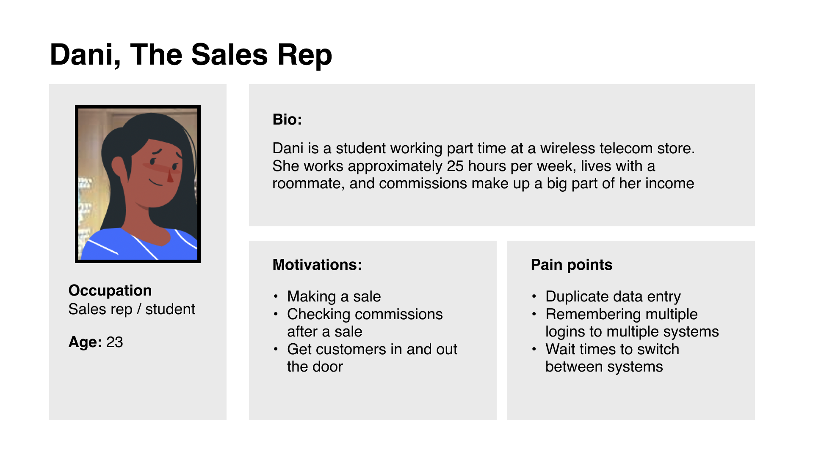 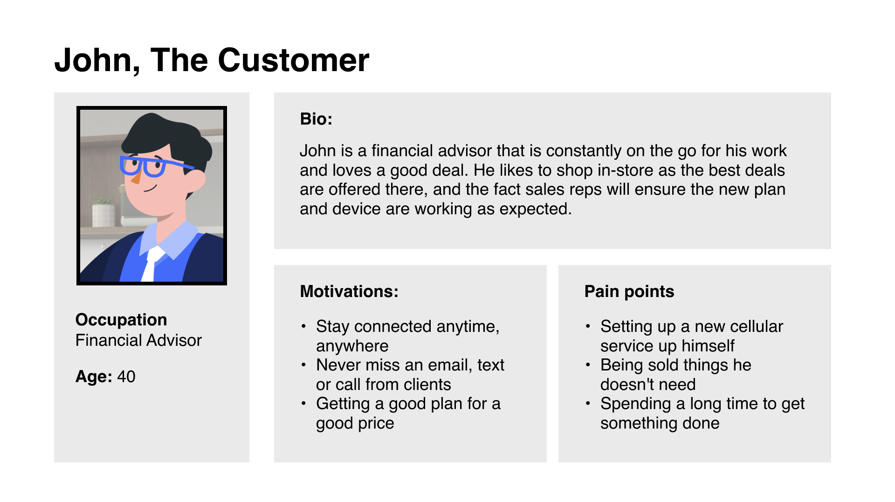I created an end-to-end in-store experience vision and shared it with clients to align on the direction we are headed. We were able to validate the direction of frictionless experience on 1 platform.
We also learned that our clients prioritized speed above everything. Every impact made has to reduce the transaction time.
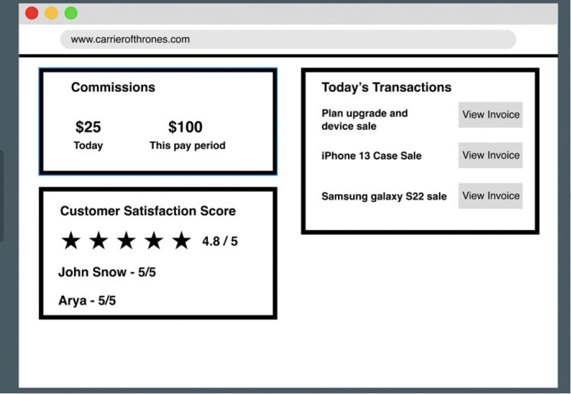 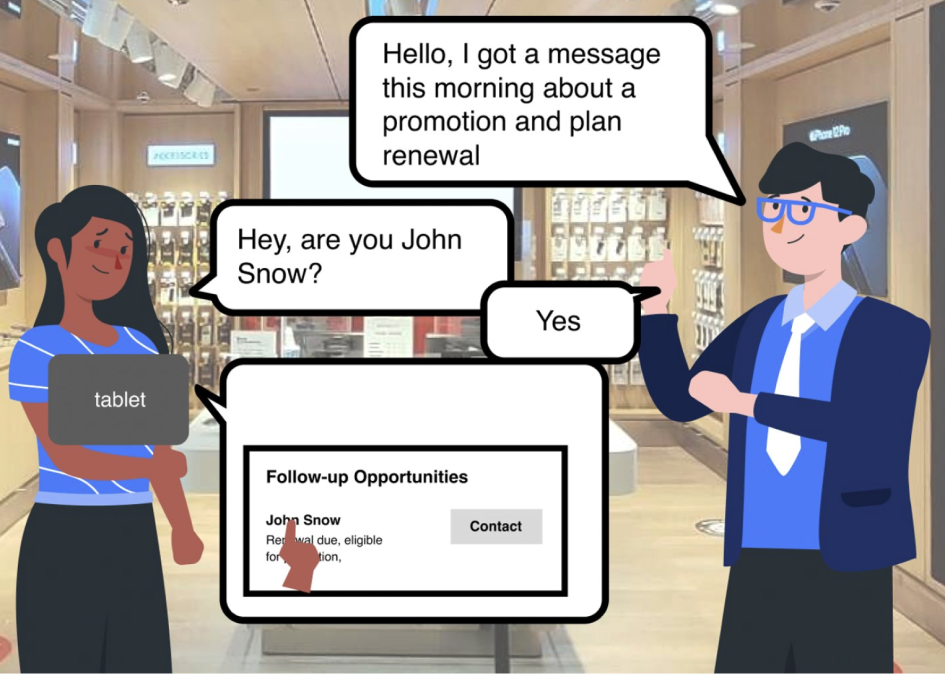I looked at industry leading point-of-sales on the market like Shopify and Square. I also collaborated with the team to understand telecom specific use cases that the design needs to be aware of.
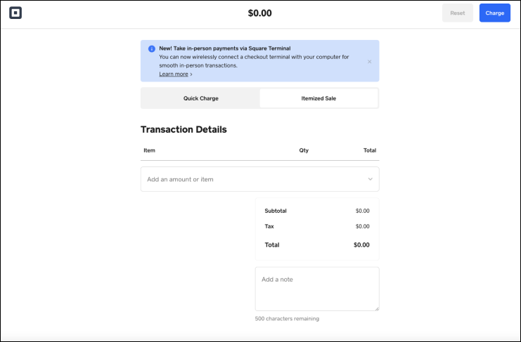 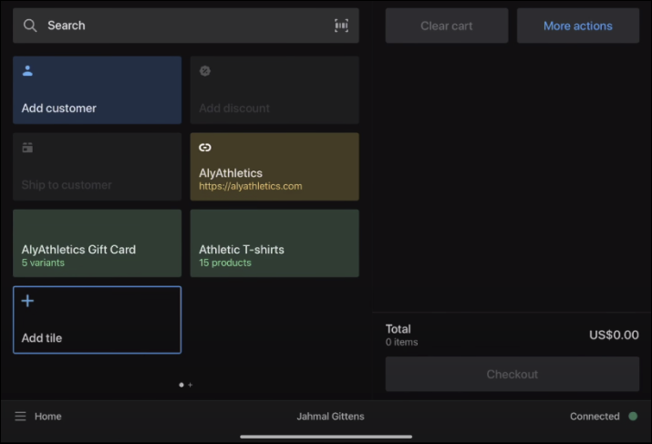 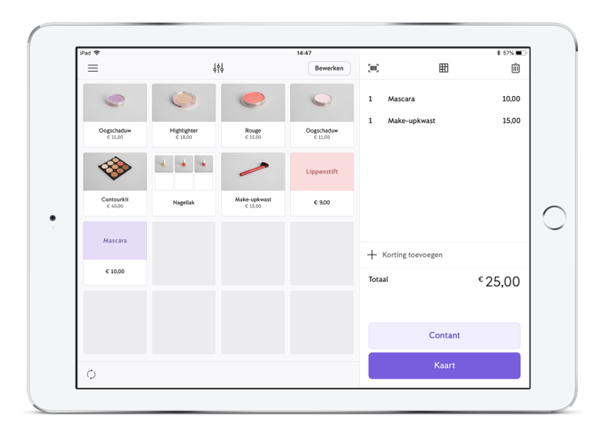 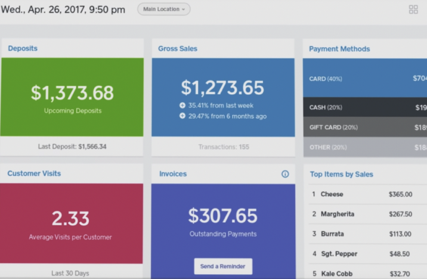As our current product is huge in terms of features, our team decided to start exploring the point-of-sale from a non-serialized item (anything without IMEI) transaction.
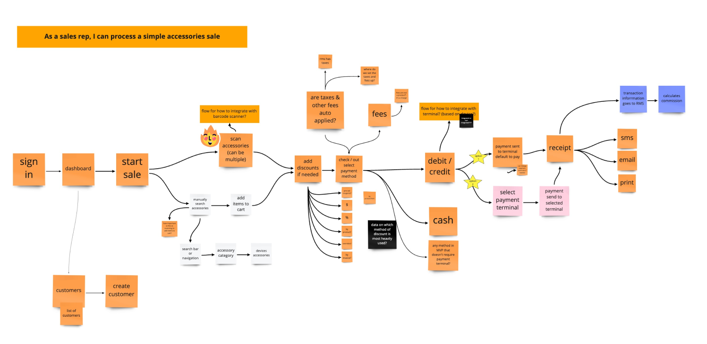I applied the feedback we got from our clients and explored multiple concepts, as well as the high-level vision.
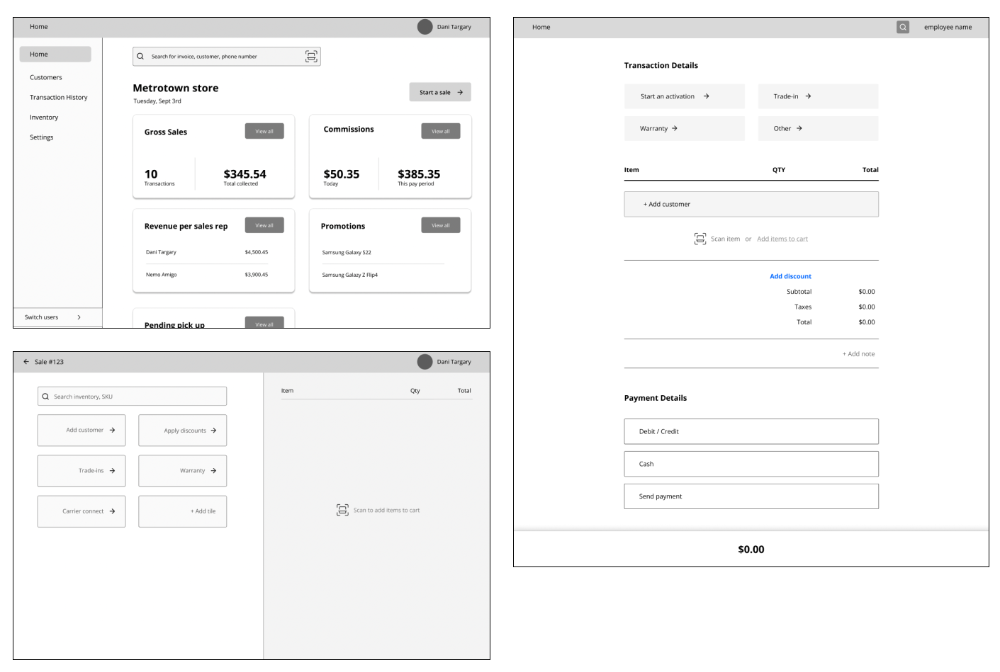I showed the long-term vision to product & engineering and collaborated with them on narrowing down a MVP. Our assumption was:
- Ability to process a non-serialized transaction (non-IMEI)
- Ability to discount manually
- Email & print receipt only
- No cash transactions
We validated the design vision and MVP with our clients to see if it provides enough value for a pilot.
Learnings:
- Coupons are a must-have. (They have over 5000 coupons)
- Unlocked serialized products are a must-have.
This feedback was also used to write MVP requirements
For user testing, I conducted internal, external and went in-store to ensure the design is seamless for the in-store environment.
Key findings were:
- The user’s eyes always went to the bottom of the cart first to see if discounts has been applied.
- Applying discounts was one too many clicks. At a scale of 200 sales per day, every click saved is time saved.
- Showing address when searching for a customer is a security risk.
- Printing receipts is very expensive for the business.
Post usability testing, I explored multiple ways to save clicks when applying discounts.
I worked with my crossfunctional stakeholders to understand what value we can deliver for an MVP, but also considering where we can move towards.
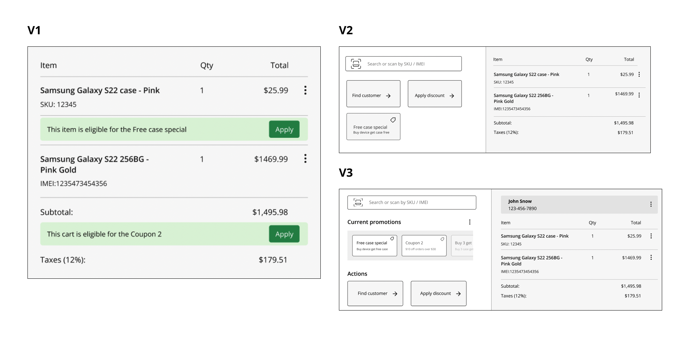Throughout my user testing and collaboration with the security team, I learned there was considerations and processes put in place to prevent identity theft and fraud.
Seeing how this was extremely common in the industry, with severe consequences, I created an anti-persona with best practice guidelines to prevent identity theft and fraud.
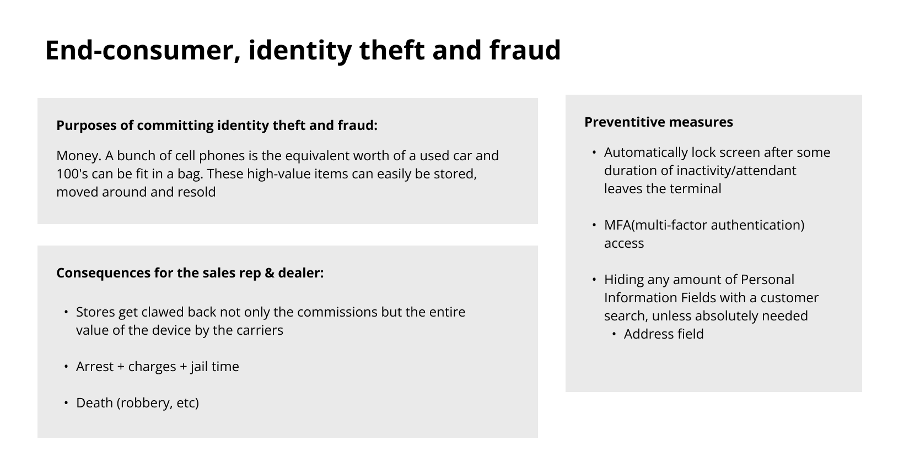One of the requirements for this project is to allow our clients to use this on any device, I ensured all the design components were scalable for mobile devices.
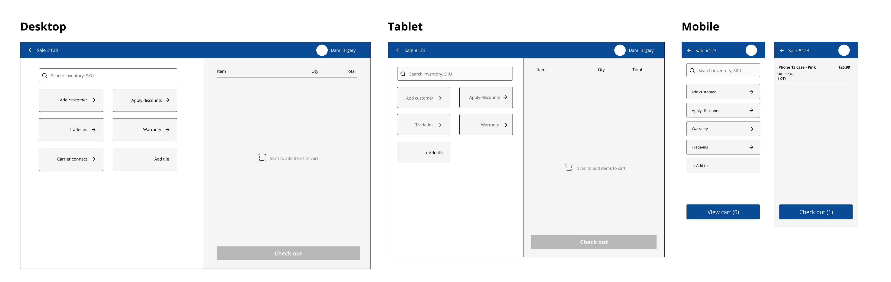


As design never really had a seat at the table, I was able to be included from the very beginning. I was able to establish this process with product, and I got a testimonial from my product owner:
"...I don't think I've ever had a designer create mocks to share with clients BEFORE requirements were written. it makes a ton of sense to me to do that - to get feedback that can be used to develop the requirements...
...This has been helpful so far in eliciting more meaningful requirements from users..."